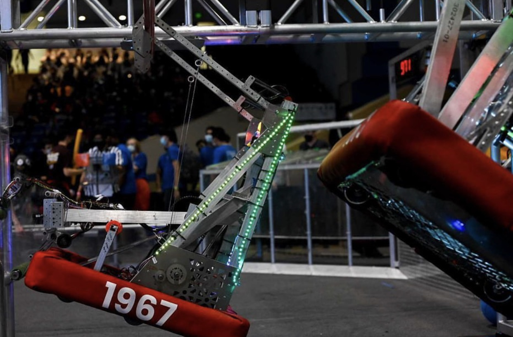

2020-2022 Season
As a result of the pandemic students were unable to meet in person and therefore a robot was unable to be built in 2020. Members spent the year learning Computer Aided Design(CAD) and doing technical documentation.
The 2021-2022 FIRST Robotics Competition season, known as "Rapid React, " presented teams with a space-themed challenge that drew inspiration from space exploration. Here’s a comprehensive breakdown of the season:
Competitions we Attended:
Monterey Bay Regional: Semifinalists; Silicon Valley Regional
Game Overview
In "Rapid React," teams built robots to compete in a dynamic and complex field layout designed to simulate a spaceport. The game combined elements of cargo handling, precision shooting, and strategic climbing.
Field Layout
Field Elements: The playing field featured two main areas: the "Hangar" and the "Launchpad". The Launchpad had two target zones, known as "Upper Hub" and "Lower Hub," where robots aimed to shoot cargo. The Hangar included a set of "Rung" structures that robots could climb to earn additional points.
Cargo: The game utilized spherical game pieces called "cargo" which teams had to transport and shoot into the hubs.
Game Rules
Match Format: Each match lasted two minutes and 30 seconds, divided into a 15-second autonomous period where robots operated without human input, followed by a driver-controlled teleoperated period.
Scoring: Teams earned points by:
Shooting Cargo: Successfully shooting cargo into the Upper or Lower Hubs.
Climbing: Robots could climb the Rungs in the Hangar during the final 30 seconds of the match, with higher rungs offering more points.
Cargo Accumulation: Points were awarded for each piece of cargo successfully scored into the hubs.
Strategic Elements
Autonomous Period: Teams programmed their robots to perform specific tasks during the autonomous phase, such as moving to target locations and shooting cargo.
Teleoperated Period: Teams controlled their robots to maneuver around the field, collect and shoot cargo, and attempt climbs.
Endgame Climbing: Effective use of the Hangar and Rung climbing was crucial for maximizing points in the endgame.
Game Objectives
Effective Cargo Handling: Teams needed to design robots capable of quickly and accurately handling cargo to score points.
Strategic Climbing: Climbing the Rungs was a key strategy for teams looking to secure high scores, especially in tight matches.
The season saw a variety of innovative designs and strategies as teams tackled the challenge of balancing efficient cargo handling with successful climbing maneuvers.